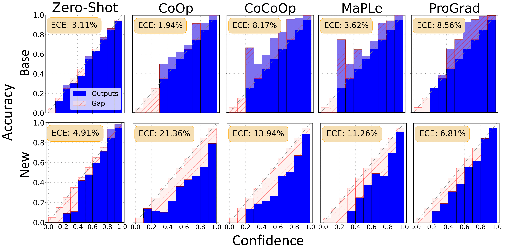
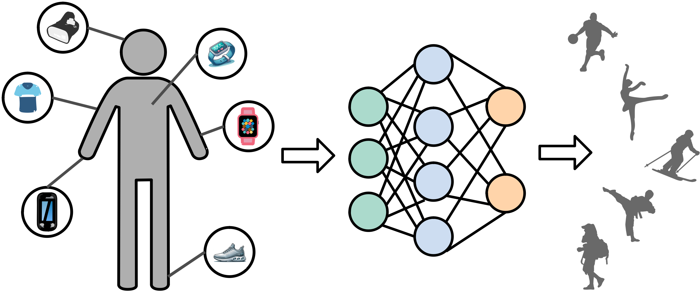

<ul>
  <li>
    <div class="pub-row">
      <div class="col-sm-3 abbr" style="position: relative; padding-right: 15px; padding-left: 15px;">
        
        <abbr class="badge">CVPR</abbr>
      </div>
      <div class="col-sm-9" style="position: relative; padding-right: 15px; padding-left: 20px;">
        <div class="title"><a href="https://openreview.net/pdf?id=pY2UpspnBB">Open-Vocabulary Calibration for Fine-tuned CLIP</a></div>
        <div class="author"><strong>Shuoyuan Wang</strong>, Jindong Wang, Guoqing Wang, Bob Zhang, Kaiyang Zhou, Hongxin Wei</div>
        <div class="periodical"><em>International Conference on Machine Learning <strong>(ICML)</strong>, 2024.</em></div>
        <div class="links">
          <a href="https://openreview.net/pdf?id=pY2UpspnBB" class="btn btn-sm z-depth-0" role="button" target="_blank" style="font-size:12px;">PDF</a>
          <a href="https://github.com/ml-stat-Sustech/CLIP_Calibration" class="btn btn-sm z-depth-0" role="button" target="_blank" style="font-size:12px;">Code</a>
          <a href="https://github.com/ml-stat-Sustech/CLIP_Calibration" class="btn btn-sm z-depth-0" role="button" target="_blank" style="font-size:12px;">Project Page</a>
          <a href="https://scholar.googleusercontent.com/scholar.bib?q=info:noJOFFTtj3cJ:scholar.google.com/&output=citation&scisdr=ClHlFec0EOrhkyl5VJc:AFWwaeYAAAAAZp1_TJeq_pTuiDQCgtB58TZBulg&scisig=AFWwaeYAAAAAZp1_TCjCyHmD7wducRfxKA1YtXc&scisf=4&ct=citation&cd=0" class="btn btn-sm z-depth-0" role="button" target="_blank" style="font-size:12px;">BibTex</a>
        </div>
      </div>
    </div>
  </li>
  
  <br />

  <li>
    <div class="pub-row">
      <div class="col-sm-3 abbr" style="position: relative; padding-right: 15px; padding-left: 15px;">
        
        <abbr class="badge">MICCAI</abbr>
      </div>
      <div class="col-sm-9" style="position: relative; padding-right: 15px; padding-left: 20px;">
        <div class="title"><a href="https://arxiv.org/pdf/2310.18562.pdf">Optimization-Free Test-Time Adaptation for Cross-Person Activity Recognition</a></div>
        <div class="author"><strong>Shuoyuan Wang</strong>, Jindong Wang, HuaJun Xi, Bob Zhang, Lei Zhang, Hongxin Wei</div>
        <div class="periodical"><em>Proceedings of the ACM on Interactive, Mobile, Wearable and Ubiquitous Technologies, 2023.</em></div>
        <div class="links">
          <a href="https://arxiv.org/pdf/2310.18562.pdf" class="btn btn-sm z-depth-0" role="button" target="_blank" style="font-size:12px;">PDF</a>
          <a href="https://github.com/Claydon-Wang/OFTTA" class="btn btn-sm z-depth-0" role="button" target="_blank" style="font-size:12px;">Code</a>
          <a href="https://scholar.googleusercontent.com/scholar.bib?q=info:Y02Iufu_dFQJ:scholar.google.com/&output=citation&scisdr=ClHlFec0EOrhkyl9jQs:AFWwaeYAAAAAZp17lQtpljwoaixlkGkWN8_eoYQ&scisig=AFWwaeYAAAAAZp17lTrUvVzEQnYf9iNiCqHGgt8&scisf=4&ct=citation&cd=0" class="btn btn-sm z-depth-0" role="button" target="_blank" style="font-size:12px;">BibTex</a>
        </div>
      </div>
    </div>
  </li>

  <br />
</ul>


<h2 id="services">Services</h2>

<h4 style="margin:0 10px 0;">Conference Reviewers</h4>

<ul style="margin:0 0 5px;">
<li><a href="https://neurips.cc/"><autocolor>Advances in Neural Information Processing Systems (NeurIPS) 2024</autocolor></a></li>
</ul>

<h4 style="margin:0 10px 0;">Journal Reviewers</h4>

<ul style="margin:0 0 20px;">
<li><a href="https://www.springer.com/journal/11263"><autocolor>International Journal of Computer Vision (IJCV)</autocolor></a></li>
</ul>


    <br>

    
    <p><small>Powered by Jekyll and <a href="https://github.com/yaoyao-liu/minimal-light" target="_blank" rel="noopener">Minimal Light</a> theme.</small></p>
    

    </section>
    <footer>
      
    </footer>
  </div>
  <script src="/assets/js/scale.fix.js"></script>
  
  <script>
    (function(i,s,o,g,r,a,m){i['GoogleAnalyticsObject']=r;i[r]=i[r]||function(){
    (i[r].q=i[r].q||[]).push(arguments)},i[r].l=1*new Date();a=s.createElement(o),
    m=s.getElementsByTagName(o)[0];a.async=1;a.src=g;m.parentNode.insertBefore(a,m)
    })(window,document,'script','https://www.google-analytics.com/analytics.js','ga');
    ga('create', 'UA-111540567-4', 'auto');
    ga('send', 'pageview');
  </script>
  
</body>
</html>
